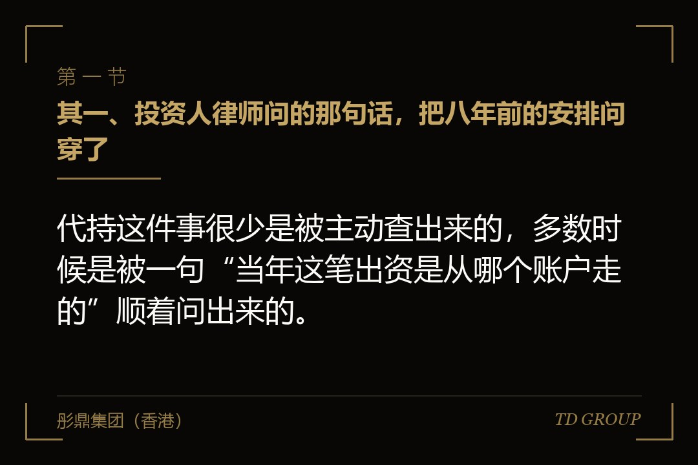
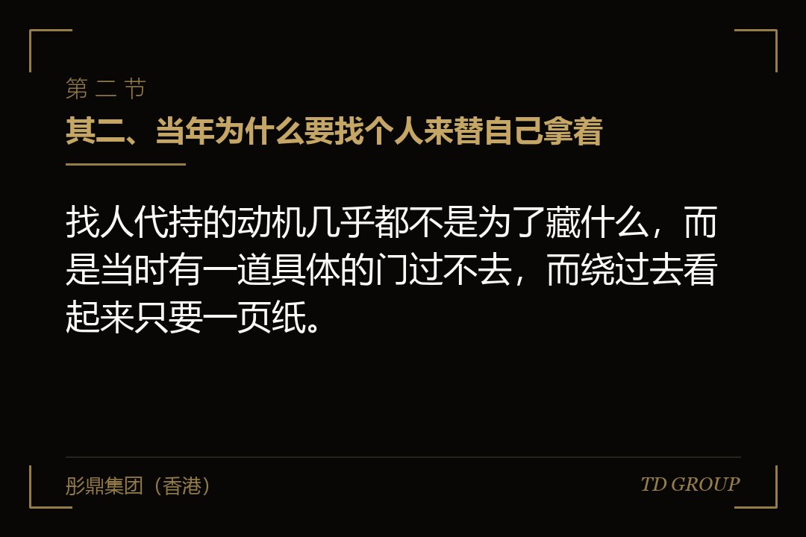
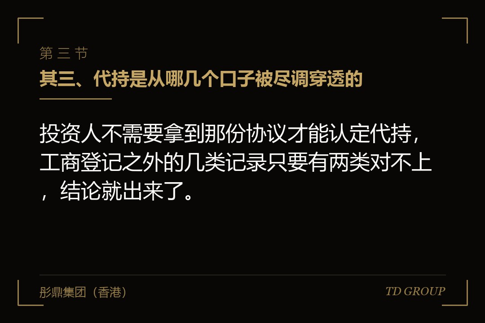

其一、投资人律师问的那句话，把八年前的安排问穿了

结论先行：代持这件事很少是被主动查出来的，多数时候是被一句“当年这笔出资是从哪个账户走的”顺着问出来的。
假设有家做环保设备的公司，创始人二零一七年办起来的时候还在一家单位任职，按规定不便自己出面持股。他把百分之三十挂在表弟名下，两人手写了一页协议：这块股权是他的，表弟只出个名字，分红和表决都听他的。这一页纸在保险柜里压了八年。
八年里公司做到年营收两亿多，二零二五年下半年谈一轮机构融资。投资方的律师进场做尽调，要的东西都很常规：历次增资与股权转让的全套文件、每一笔出资的银行回单、工商调档件，还有全体在册股东的访谈。
卡住的是那笔出资。表弟名下那百分之三十，二零一七年的出资款是从创始人的个人账户直接打到公司账户的，摘要写着投资款，付款人姓名跟股东名册上的名字对不上。律师看到回单只问了一句：这笔钱为什么不是股东本人付的。
创始人的头一个反应是把那页协议拿出来自证清白——你看，这本来就是我的。他没想到的是，这一拿，事情从“出资凭证有点乱”变成了“这家公司存在代持”，而后者在投资人的问题清单里是完全另外一档。
这轮融资最后拖了五个月才交割，中间做的事只有一件：把这百分之三十从表弟名下还回来。而这五个月里冒出来的所有麻烦，签那页纸的时候一件都没预料到。
其二、当年为什么要找个人来替自己拿着

结论先行：找人代持的动机几乎都不是为了藏什么，而是当时有一道具体的门过不去，而绕过去看起来只要一页纸。
类型一是身份限制。公务员、事业单位在编人员、现役军人，按各自的管理规定不得经商办企业或者在企业中兼职取酬；国有企业的在职人员也有各自的任职回避与投资限制。这类人要参与一门生意，常见做法就是找一位亲属或者信得过的朋友挂名。
类型二是资质与准入。有些行业的经营许可对股东背景有要求，有些领域外资进入受负面清单的限制。境外身份的实际出资人为了让公司在名义上是纯内资，把股权放在境内亲属名下，是过去二十年里相当常见的安排。
类型三是股东人数。有限责任公司的股东上限是五十人。一家公司早期做员工持股，几十个人要进来，工商窗口和后续管理都很麻烦，于是选几个人当代表，其余的签代持协议。持股平台这套工具流行起来之前，很多公司都是这么干的。
类型四是图省事。股东多一个人，工商变更就多一趟、多一套签字，异地的还要来回邮寄。有些股权本来就打算过两年调整，创始人想着先挂在谁名下、回头一并办掉，结果一挂就是八年。
这四种动机有一个共同点：它们解决的都是签署当天的问题。而代持的代价从来不在签署当天结算，它要等到有外人拿着清单进场的那一天才算总账，通常隔着五到十年。
其三、代持是从哪几个口子被尽调穿透的

结论先行：投资人不需要拿到那份协议才能认定代持，工商登记之外的几类记录只要有两类对不上，结论就出来了。
口子一是出资的钱是谁付的。银行回单、出资证明、公司开办期的银行流水，付款人姓名与股东名册对不上就是最直接的信号；还有一种更明显的形态，是名义股东账户某天收到一笔钱，当天原数转进了公司账户。
口子二是分红和表决往哪走。历年分红的支付记录、股东会决议上的签字、内部会议纪要都会被调。名义股东连着八年没到过场、分红也没进过他的账户，这件事在书面记录里瞒不住。
口子三是老股东访谈，这是最省事的一步。律师分别约谈每一位在册股东，问题都很朴素：你什么时候入的股、出了多少钱、钱从哪来、公司的大事你怎么表决。名义股东多数答不上后面两问。
口子四是任职与社保记录。有些代持是把股权放在员工或者高管名下，而这个人在公司的岗位、薪酬与社保记录，跟他名下的持股比例明显不匹配；还有些名义股东的社保在另一家公司，跟这家没有任何交集。
口子五是协议本身。走到这一步，投资方的律师通常会直接把代持协议要走，作为还原的依据收进交易文件的附件。老板往往以为交出去就没事了，实际上从那一刻起，这件事就写进了这轮融资的正式记录，往后每一轮都要交代一遍。
这五个口子当中，没有一个能靠事后补一份情况说明糊过去——它们查的都是当年留下的痕迹，而痕迹是不能倒着做的。
其四、代持协议管得到什么，管不到什么
结论先行：一份合法的代持协议在签字的两个人之间通常是有效的，但它证明不了你是股东，也拦不住名义股东把股权卖给别人。
通行的裁判规则大体分三层。头一层，实际出资人与名义股东之间的约定，只要不存在法定的无效情形，一般按合同处理：谁出的钱、这块股权的收益归谁、名义股东要不要把分红转交，都照协议来。
再往上一层，实际出资人要把名字换成自己的，也就是显名，通常需要公司其他股东过半数同意。这一条经常被误读成一道手续，它其实是一道人的关口：当年那些股东今天还在不在、关系好不好、会不会趁机提条件，直接决定了还原走不走得动。
最上面一层，名义股东如果把这块股权转让、质押或者用来清偿自己的债务，受让方在不知情且支付了合理对价的情况下，可能构成善意取得。这时候实际出资人能做的是回头向名义股东索赔，而不是把股权要回来。
三层合起来其实是一句话：那页纸保的是钱，不是股权。它让你在对方违约的时候有权追偿，但在股权归属这件事上，外人看的是登记，不是抽屉里的约定。
其五、名义股东那一头的风险，签协议的时候一条都看不见
结论先行：代持等于把一块股权的命运，绑在另一个人的婚姻、健康、债务和人品上，而这四样你一条都管不了、也预判不了。
婚姻这一头。名义股东离婚，这块股权在登记上属于他名下的婚内财产。分割时配偶主张一半，实际出资人要拿着协议去证明这不是对方的财产，而配偶那一头往往会说自己并不知情。这类案子未必打不赢，但要打，而且那段时间里公司的股权是动不了的。
健康这一头。名义股东去世，股权按登记进入继承程序。继承人未必知道有代持这回事；就算知道，也未必愿意配合还回来——对他们来说，配合等于放弃一笔已经写在名下的财产。
债务这一头。名义股东在外面欠了钱被起诉，法院会查他名下的财产，公司股权是查得到的。冻结、查封、处置是一条完整的流水线，而实际出资人要挡下来，得另外起一个执行异议之诉——那是一个新案子，从提出异议到结果落地，按年计。
人品这一头。还有一种最直接的：名义股东哪天不认了。八年前手写的一页纸，没有见证人、没有公证、金额写得含糊，等到公司值钱了，对方一句“这是我自己出的钱”，实际出资人要拿出来的是完整的出资凭证链条，而不是那页纸本身。
这四样风险有个共同点：触发它们的人不是你。你能决定什么时候找人代持，但决定什么时候出事的是对方的生活。
其六、还原要走的那四道，顺序错了会多交一次学费
结论先行：代持还原不是去工商窗口改个名字，它是一条四道的链子：确认关系、办转让、缴税、变更登记，缺一道后面都补不上。
道一是确认关系并补齐证据链条。把当年的出资凭证、代持协议、分红与表决的实际执行记录、双方往来的书面沟通，汇总成一份能自洽的材料。它不是给自己看的，是给税务、工商、下一轮投资人和将来的审核机构看的。凭证缺口在这一步补最便宜。
道二是办股权转让。还原在形式上通常做成一次转让——名义股东把登记在他名下的股权转给实际出资人。同时双方签一份还原确认，把代持关系的起止时点、出资的来源、这次转让的性质写清楚。需要其他股东过半数同意的，这一步要一并拿到书面同意与放弃优先购买权的文件。
道三是税。自然人转让股权按财产转让所得计税，这是整条链子上真要出钱的那一道，也最容易被当成走个形式而把价格随手写低，下一章单说。
道四是变更登记。拿着转让协议、股东会文件和完税凭证去办工商变更，同步修改股东名册与公司章程。这一步办完，登记上的股东才是实际出资人。有对外投资、有经营许可、有银行授信的，别忘了同步更新那几处备案的股东信息，它们不会自己跟着变。
顺序不能倒。先去工商窗口办变更、事后再补协议和完税凭证，是实务里很常见的一种做法，也是最容易在下一轮尽调里被看出来的一种：变更日期在前，协议日期在后，两张纸自己会说话。
其七、还原带出来的税，以及价格不能随手写一块钱
结论先行：还原在税务上就是一次股权转让，转让价明显偏低又说不出正当理由的，主管税务机关可以核定收入，按核定的数征税。
很多老板的直觉是：这块股权本来就是我的，我从自己人手里拿回来，一分钱不给也说得过去，转让价写一块钱。这个做法在税务口径上站不住——税务机关看的是这次转让本身，而不是这次转让背后的那段历史。
自然人转让股权，按财产转让所得缴纳个人所得税，应纳税所得额是转让收入减去股权原值和合理费用。原值一般是当年实际支付的出资款，能不能证明，靠的就是道一那份凭证链条。凭证不全，原值认不下来，税基就会被顶高。
关于价格，通行的管理办法给了几条判断标准：申报的转让收入明显偏低而且没有正当理由的，主管税务机关有权核定，常见的核定方法是参照公司的净资产来算。一家净资产几千万的公司，股权按一块钱转，被核定几乎是必然的结果。
正当理由并不是没有。近亲属之间的转让、按公司章程规定进行且价格合理并有充分资料证明的内部转让，都在通行的正当理由之列。代持还原能不能落进去，要看当年的证据够不够，以及主管税务机关的实际认定口径，具体以正式规则文本与主管机关的认定为准。
这一章要带走的不是某个数字，是一个顺序：先想清楚这次还原在税上怎么解释，再去办转让。反过来做的，通常是转让办完了、税务问起来才回头找证据，那时候能补的东西已经不多。
其八、卡在最后一米的两件事，和一份今天下午就能拉的清单
结论先行：还原走到最后卡住的，多数不是税也不是工商，是名义股东配偶的那一个签字，和当年那几笔出资找不到回单。
配偶签字这件事。登记在名义股东名下的股权，在他的婚姻关系存续期间通常被当作夫妻共同财产处理，要转出去，实务中大量的窗口和交易对手会要配偶的书面同意。前面那家环保设备公司卡的就是这一步：表弟本人配合，表弟的妻子不签，理由是她八年来一直以为这是自家的一笔资产。
这件事没有技巧可言，只有两条路：把代持的证据摊到她面前让她认，或者由名义股东先在家里把这件事说清楚。两条路都要时间，而交割是有时间表的。所以配偶这一环要在尽调开始那一周就问，别留到签字前一天。
出资凭证这件事。八年前的银行回单，多数人手里早就没有了。历史流水通常还能调，但年份久的要走专门流程、要本人到场、要排时间，同样得在尽调启动那几天就动手。
如果你手上正好有一块股权挂在别人名下，下面这六件事今天下午就能开始做。其一，把当年那份代持协议找出来，看有没有双方签字、有没有写明出资金额与股权比例、有没有约定分红与表决怎么走。
其二，去银行调当年那笔出资的回单，看付款人是谁、收款账户是不是公司、摘要写的是什么。其三，把历年分红的支付记录拉一遍，看钱最终进了谁的账户。
其四，查一下名义股东现在的状况：名下有没有被执行记录、有没有在打的官司、婚姻状况有没有变化。这一步在公开的企业与司法信息渠道就能查到大半。
其五，问一遍公司现有的其他股东，看还原时能不能拿到过半数同意，以及会不会有人主张优先购买权。其六，把上面五项对着未来十二个月的时间表看一遍：如果这期间会有新一轮融资、股权变动登记或者申报计划，还原就不是可选项，而是必须排进日程的一件事。
因此，代持真正的代价从来不是那页纸写得对不对，而是它把披露的时点交到了别人手里。自己挑时点去还原，付的是税和几个月；被尽调、被一场离婚或者一纸执行裁定挑中，付的是整轮融资的节奏。